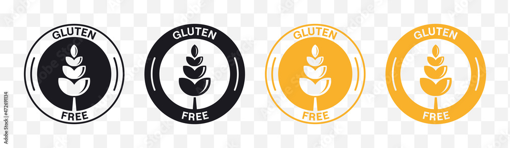

What is Gluten-Free Chat?
Gluten-Free Chat is a place for family to chat and share tips about gluten-free food. As those with Celiac know, there is no worse feeling than finding out you have just ate something with gluten. Family is generally unsure, and using google to try and answer their question usually just confuses them. This application is a simple solution, where everyone can feel better about what is being eaten.
Site Navigation:
Go to the home screen to login, and you will be able to access the chat section.
You can also click the logo in the top left corner to return to the login page at any time.
Featured User: